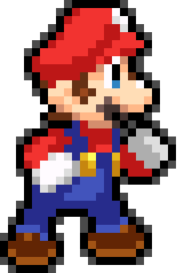

Loading...
Game Features:
- Choose Your Character: Selecting your favorite character!
- Move with WAD KEYS: Use the WAD keys to jump, move left, or move right. Navigate the character through challenging obstacles and pesky goombas
- Defeat Goombas: Step on Goombas to defeat them and clear your path
- Candy Crush Challenges: As you progress, you'll encounter special Candy-Crush-like matching games by jumping into a tunnel. Clear two adjacent candies of same type to earn at least 50 points before the time runs out!
- Earn Hearts or Die Trying: Hearts are your lifeline, earn them by winning the Candy Crush challenges. You earn three hearts by winning the Candy Crush challenge, and lose one heart if you fail the challenge.
- Reach the end before time is out to win the challenge! Be careful, do not fall from the platforms!
- Play the game in full screen mode please!